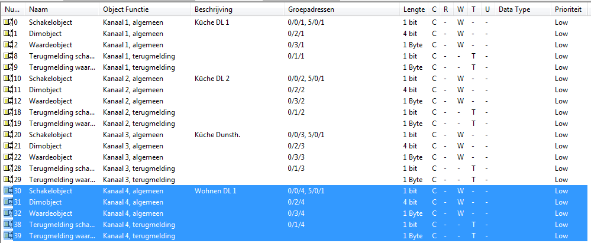

I have followed the KNX ETS4 Import to OpenRemote Youtube video for setting up my first switch and slider.
I am using a Merten IC1 controller plus Merten Dimmers and Switches.
The normal switch in the UI is working correct. Also when I am switching the pushbutton on the wall in the UI is show the correct status.
For the slider this does not work. It slides a tiny bit and then stops. So it is not reading back the right value.
I have no clue how to solve this.
I have already tried to switch groupadress as I do not exactly know if I am using the right adresses. My system is in German language.
The origional names of my system the are:
0/0/4 Beleuchtung schalten (Switch 1 On/Off)
0/1/4 Beleuchtung Rückmeldung (Switch 1 Status)
0/2/4 Beleuchtung dimmen (Dimmer Value Direct)
0/3/4 Beleuchtung Wert (Dimmer Status Value)
I have created the switch and slider as shown in the video but the sliders doesn't work correct.
I can use the slider for switching on (with dimsteps) the light and switching it off.
Now I am stuck. Any help is welcome.
{kind=link}
{kind=link}
{kind=link}
{kind=link}
{kind=link}
{kind=link}
{kind=link}
|
Is your actuator configured to send the dimmer value after a change? |
|
Hi Marcus, thanks for trying to help me out.  The blue marked area is the switch and dimmer I am talking about. I have used the import function of Openremote for ETS3. Also than it is not working. |
|
I assume your screenshots are dutch? I can understand a little but not all |
|
I have changed my language setting to German so you can understand. I think the installer already has switched on the option for this but did not attached a groupadress for it. |
|
Flags should be ok. For status objects most of the times i also allow Read. |
|
Its working. You are a genius! |
{kind=link}
{kind=link}
{kind=link}
{kind=link}